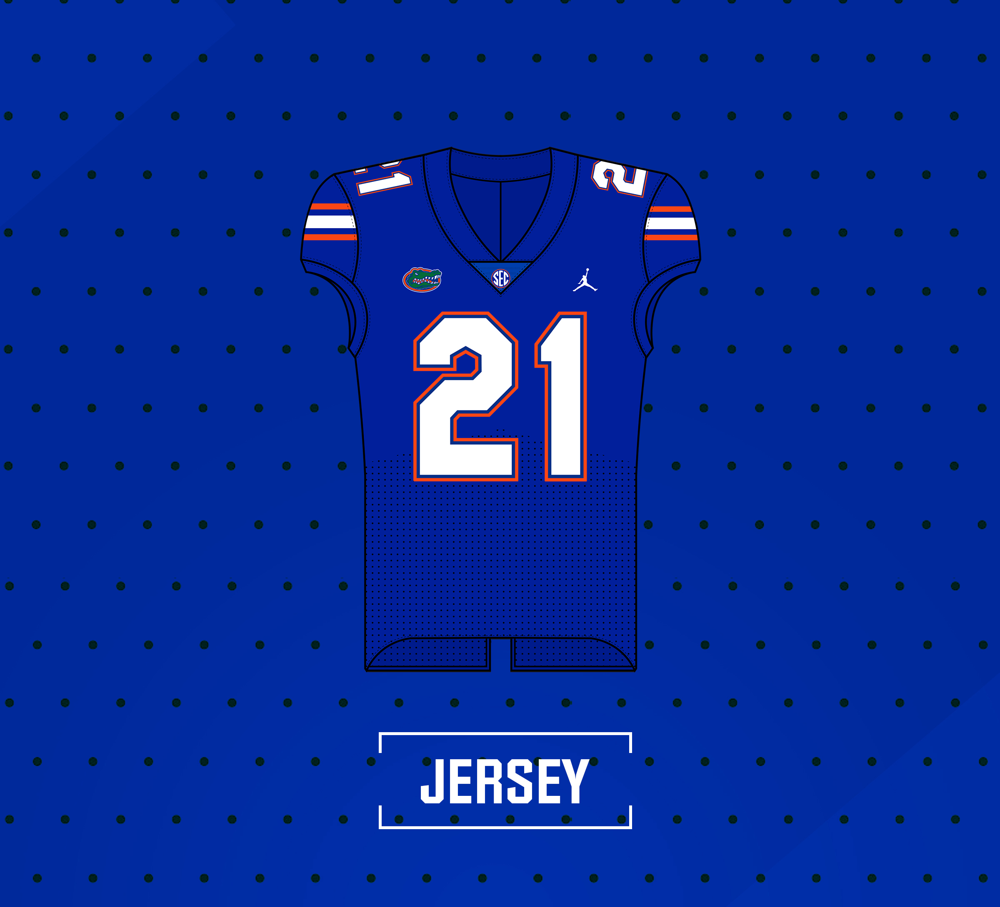

Home
News
Football
Concepts
About
Retro orange helmets
Florida reveals 2021 throwback uniforms
Read More
Florida commemorates 9/11
Gators wear American flag script Gators decals on helmets against USF
Read More
Florida wears white at home
For the first time in 20 years, the Gators wore white in The SwampThe long, storied tradition of white helmets
Read More
News
White Helmet History
GatorsUnis September 9, 2021
Florida reveals new blue helmets
GatorsUnis December 3, 2020
Black uniforms coming for the Gators?
GatorsUnis September 22, 2020
Uniform Database

Tweets by GatorsUnis
Concepts